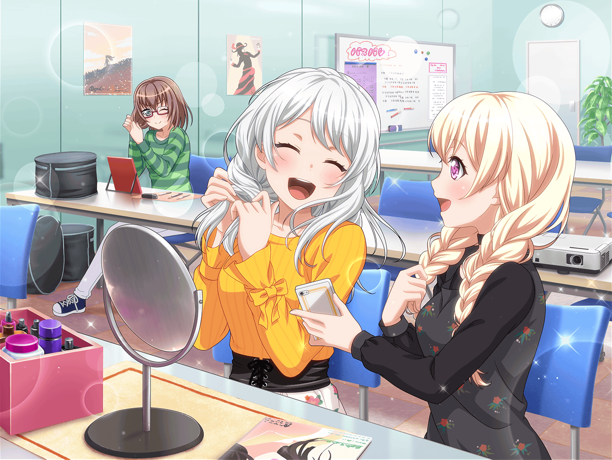

芸能事務所 会議室
イヴ
えへへへへ……
千聖
おはよう、イヴちゃん。
朝から嬉しそうね？
イヴ
あ、チサトさん！ おはようございます！
イヴ
このSNSの投稿を見てくださいっ！
千聖
これは……イヴちゃんと同じ髪型にしているのね。
ファンの女の子？
イヴ
はい！
今SNSで『#イヴ編み』というハッシュタグで
みなさんが写真をアップしてくれているんです！
千聖
そうなのね。
……そういえばこの前のお渡し会でも、
イヴちゃんと同じ髪型のファンの子を、よく見た気がするわ
イヴ
えへへ、そうなんです！
私も見かけて、とっても嬉しかったです！
千聖
イヴ編みって、オリジナルの名前がついてるのも素敵ね。
イヴちゃん、これを見て。
ブログを書いてる子もいるみたいよ
千聖
イヴ編みに似合うヘアアクセや
コーディネートを紹介してくれてるわね
イヴ
そうなんです！
もしかしたら、私よりイヴ編みに詳しいかもしれません！
イヴ
今度、私もみなさんの投稿を参考に、
アクセサリーを買ってみようと思います
千聖
本人に参考にしてもらえたら、
きっとこのファンの子も喜ぶわね
イヴ
そうですかね？ そうだったら嬉しいです♪
イヴ
それにしても、こういうのって嬉しいですけど
ちょっと照れちゃいますね……
千聖
ふふっ、それだけイヴちゃんに憧れているファンが
たくさんいるってことね
イヴ
そ、そうなんでしょうか！
何だか信じられません……！
イヴ
私がサムライに憧れるように、
私にも憧れてくれる方がいるなんて……
イヴ
……はっ！
イヴ
チサトさん！
私……気づいてしまいました！
千聖
ど、どうしたのイヴちゃん？
イヴ
これは私が実質サムライになった、
ということではないでしょうか！？
イヴ
はあ……
ついに念願のサムライになってしまいました……！
千聖
い、イヴちゃん……
どういうことなのか説明してもらえる？
イヴ
はい！ 私はサムライに憧れています。
そしてファンの方が私に憧れてくれているとしたら……
それはつまり、私もまたサムライということです！
千聖
えっと……その話、ちょっと理屈がわからないわ……
イヴ
あ、でも……
千聖
こ、今度はどうしたの？
イヴ
みなさんがイヴ編みとして、
三つ編みにしてくれているのなら、
私、違う髪型にしない方がいいのでしょうか……？
千聖
どうして？
イヴ
だって、三つ編み以外の髪型にしたら
イヴ編みにしてくれているファンの人達に
申し訳ないような気がして……
千聖
……ふふっ、なるほどね。
イヴちゃんのそういう真面目で優しいところ、
とてもステキだと思うわ
イヴ
チサトさん……ありがとうございます
千聖
でも、心配いらないわよ、イヴちゃん
イヴ
どうして、でしょうか？
千聖
そうね……イヴちゃんはサムライの髪型が
好きなのかしら？
イヴ
そうですね……髪型も好きですが、何よりも
私が好きなのはサムライの精神です！
千聖
そうよね。
それと同じことよ
イヴ
あっ……！
千聖
イヴちゃんのファンは、もちろんイヴちゃんの髪型や、
ビジュアルも好きなんだと思う
千聖
でも、それだけじゃない。
みんなイヴちゃんの優しくて真っ直ぐなところや、
飾らないところが好きなのよ
イヴ
な、何だか照れちゃいますね……
千聖
イヴちゃんの内面が素敵だからこそ、
ファンの人達もイヴちゃんに憧れて、
髪型を真似しているんだと思うの
千聖
だから、三つ編み以外の髪型をしても、
イヴちゃんのファンじゃなくなる人なんて、
きっといないわ
イヴ
チサトさん……！
ありがとうございます！
イヴ
そうですよね、私が無理をして
三つ編みにし続けても
ファンの方達はきっと喜んでくれません！
イヴ
きっとサムライのような髪型にしても、
ファンの方はついてきてくれます！
千聖
そ、それはまたどうかと思うけど……
イヴ
ふふっ、冗談です！
私もこの髪型、好きですから！
イヴ
これからもみなさんに、
好きでいてもらえるように、
私、もっと頑張ります！